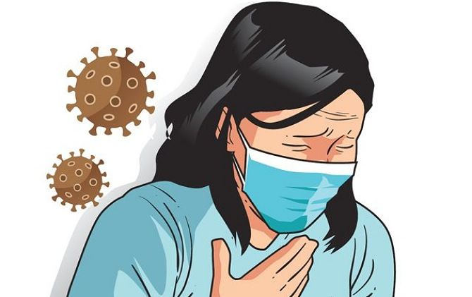

- Page 1
Beranda / Home
Infeksi virus Corona disebut COVID-19 (Corona Virus Disease 2019) dan pertama kali ditemukan di kota Wuhan, China pada akhir Desember 2019. Virus ini menular dengan sangat cepat dan telah menyebar ke hampir semua negara, termasuk Indonesia, hanya dalam waktu beberapa bulan. Hal tersebut membuat beberapa negara menerapkan kebijakan untuk memberlakukan lockdown dalam rangka mencegah penyebaran virus Corona. Di Indonesia sendiri, diberlakukan kebijakan Pembatasan Sosial Berskala Besar (PSBB) untuk menekan penyebaran virus ini.
Coronavirus adalah kumpulan virus yang bisa menginfeksi sistem pernapasan. Pada banyak kasus, virus ini hanya menyebabkan infeksi pernapasan ringan, seperti flu. Namun, virus ini juga bisa menyebabkan infeksi pernapasan berat, seperti infeksi paru-paru (pneumonia). Virus ini menular melalui percikan dahak (droplet) dari saluran pernapasan, misalnya ketika berada di ruang tertutup yang ramai dengan sirkulasi udara yang kurang baik atau kontak langsung dengan droplet.
Masing-masing orang memiliki respons yang berbeda terhadap COVID-19. Sebagian besar orang yang terpapar virus ini akan mengalami gejala ringan hingga sedang, dan akan pulih tanpa perlu dirawat di rumah sakit.
Gejala yang paling umum:
Gejala yang sedikit tidak umum:
Terapi medis
Ilmuwan dari seluruh dunia tengah berupaya menemukan dan mengembangkan obat untuk COVID-19.
WHO tidak merekomendasikan perawatan mandiri dengan obat apa pun, termasuk antibiotik, sebagai pencegahan atau pengobatan untuk COVID-19.